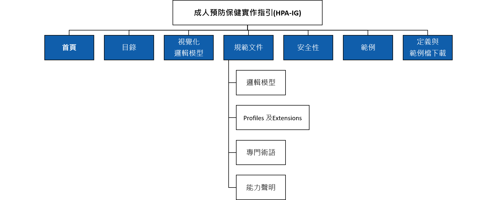
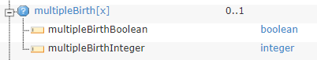
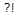
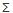
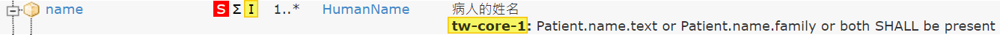

成人預防保健實作指引(HPA-IG)
0.2.1 - ci-build
成人預防保健實作指引(HPA-IG)
0.2.1 - ci-build
成人預防保健實作指引(HPA-IG) - Local Development build (v0.2.1) built by the FHIR (HL7® FHIR® Standard) Build Tools. See the Directory of published versions
| Official URL: https://twhpa.tsti.com/ImplementationGuide/tw.etatung.hpa | Version: 0.2.1 | |||
| Active as of 2025-06-11 | Computable Name: HPA | |||
成人健檢實作指引(Adult Check IG) 依據【國民健康署成人預防保健服務檢查單】與【國民健康署成人預防保健服務檢查紀錄結果表單資料電子檔申報格式】，採用HL7® FHIR® standard（Fast Healthcare Interoperability Resources）IG建置方法，在FHIR R4.0.1 與TW Core IG之標準基礎上，進一步定義適用於健康照護資料交換需求的Resources（類似資料表）、其中的資料項目（意即欄位）、基數（意即0..1、0..、1..1或1..）及資料類型（文字、日期時間、代碼等）等，旨在提供健康照護資訊系統開發與實作者以成人健檢實作指引為基礎，再進一步訂定其實務專案所需之資料交換格式以應用於專案中。
成人健檢實作指引之網站架構圖如下圖所示。各功能說明如下：
| 英文名 | 中文名 | 說明 |
|---|---|---|
| Name | 名稱 |
resource的資料項目名稱（意即XML元素名稱；JSON或RDF屬性名稱）。有些名稱末端為[x]，圖示為  如果系統只知病人是否多胞胎，則資料項目名稱為multipleBirthBoolean，內容值為「true」；如果系統中有病人多胞胎之出生順序為第2序位，則資料項目名稱為multipleBirthInteger，內容值為「2」。更多符號說明，請參閱FHIR官網相關說明。 |
| Flags | 標記 | 一組有關影響實作者如何操作資料項目的資訊，範例如下。 |
| 必須支援（MustSupport），表示用戶端（Client）所傳送之資料項目，伺服端（Server）必須有能力接收並儲存此資料項目。繼承使用時可再依據專案需求，對MS做出延伸定義，但必須於應用說明說明其延伸定義的具體說明。詳可參閱MustSupport。 | ||
|  | 表示此資料項目可能會完全修正或改變其他資料項目的意涵，需特別留意。詳可參閱Modifier。 | |
|  | 表示此資料項目為摘要的一部分，詳可參閱Summary searches。 | |
|
表示此資料項目受規範設定的限制（constraints）影響，例如：Patient.name的限制為「name.text（完整中文姓名）」或name.family（英文姓）或者兩者必須填寫」，詳可參閱Constraints。
 |
||
| Card. | 基數 | 此資料項目允許出現在這個resource的最小至最大次數，意即例如某一資料項目的基數若為0..1，表示可不填寫或至多填入1筆；若為1..1，表示必須（只能）填入1筆；若為0..*，表示可不填寫或填入多筆（不限筆數）；若為1..*，表示至少要填入1筆或填入多筆（不限筆數）。 |
| Type | 資料類型 | 資料項目的資料類型（可超連結至該型別的定義），例如：boolean、integer、dateTime等。 |
| Description &Constraints | 描述與限制 | 此資料項目的描述及詳細的限制。尤其編碼的資料項目可使用何種代碼填寫，如果有特定需要綁定的代碼，則會以Binding陳述。 |
| 英文名 | 中文名 | 說明 |
|---|---|---|
| Required | 要求使用 | 應填入值集中的其中一個代碼 |
| Extensible | 可擴充 | 應填入值集中適合的代碼，確定無適合的代碼才可以使用其他值集的代碼來表示。 |
| Preferred | 鼓勵使用 | 鼓勵使用值集中的代碼，但不強制一定要使用此值集，你也可使用其他值集的代碼或單純以文字表示。 |
| Example | 範例 | 可參考值集，但此值集只是針對這個欄位的一個可能值的範例，不預期也不鼓勵使用者一定要使用此值集的代碼。 |
FHIR使用RFC 2119中定義的遵從度動詞必須（SHALL）、建議應該（SHOULD）和可能可以（MAY）。而FHIR與RFC 2119不同的是，FHIR允許不同的應用程式因使用可選功能的方式而無法達到可互操作性，特別是：
1. 必須（SHALL）：所有實作絕對要遵從要求。
2. 必須沒有（SHALL NOT）：所有實作絕對禁止的要求。
3. 建議應該（SHOULD）/建議不應該（SHOULD NOT）：實作者在特定實作的情境下考慮的最佳或建議實作方法；雖然忽略一個項目可能有正當理由，但在選擇不同的程序之前，必須了解並慎重衡量所有含義。
4. 可能可以（MAY）：這是實作者真正可選的要求；可根據實作者的決定使用或不使用，不會造成任何影響。
其餘詳細規則請詳閱TW Core IG網站
| 角色 | 姓名 | 機構 | 聯絡方式 |
|---|---|---|---|
| 作者 | 彭子芳 | 大同世界科技股份有限公司 | polly.peng@etatung.com |
| 作者 | 陳俊勳 | 花蓮慈濟醫院 | junxun26@gmail.com |
| 貢獻者 | 蕭睿霆 | 花蓮慈濟醫院 | yji4j4@gmail.com |
| 貢獻者 | 吳東信 | 大同世界科技股份有限公司 | kane.wu@etatung.com |
| 貢獻者 | 楊鯉蔚 | 大同世界科技股份有限公司 | david.yang@etatung.com |
| 貢獻者 | 莊思彥 | 大同世界科技股份有限公司 | siyen.zhuang@etatung.com |
| 貢獻者 | 陳鴻裕 | 大同醫護股份有限公司 | hongyu.chen@tmhtc.net |
| 貢獻者 | 陳雨安 | 大同醫護股份有限公司 | yuan.chen@tmhtc.net |